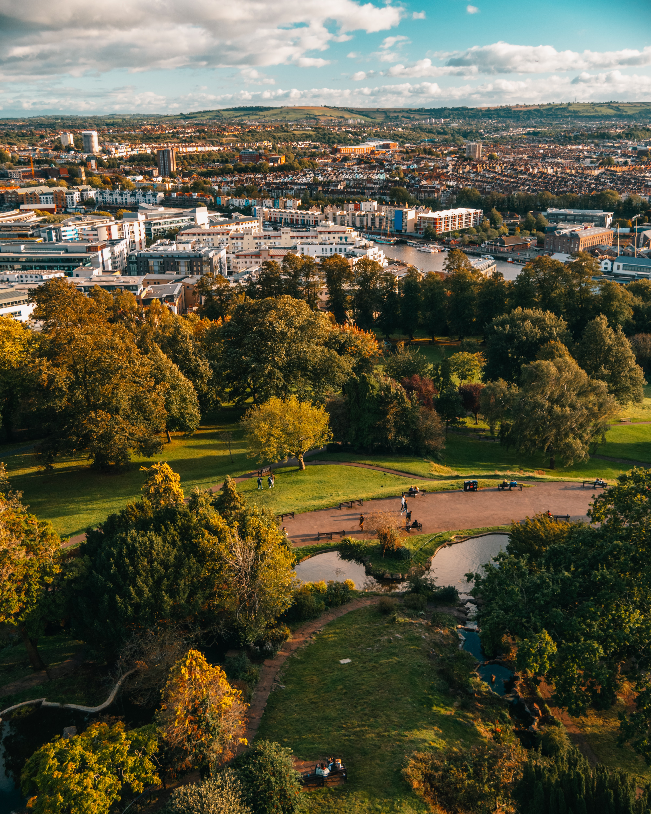
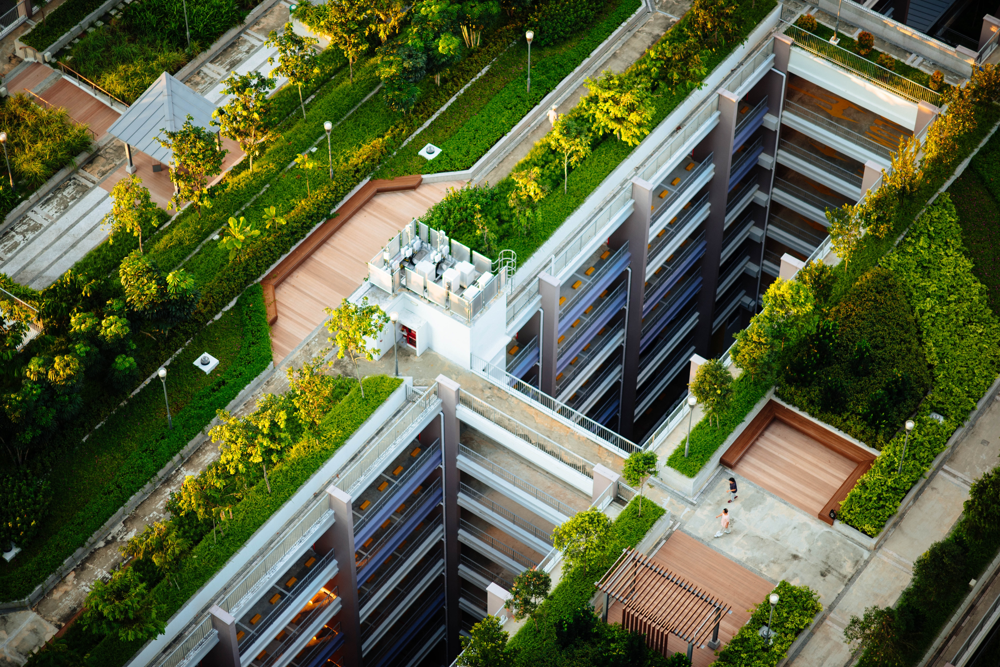

The Covid-19 pandemic has shown many city-dwellers tucked away indoors
the enormous mental health benefits of spending time in nature. And as
urbanisation takes over the world—with 5.2 billion people estimated to
live on 1.9 million km2 of urban land by 2030—it is increasingly
important to design city spaces to accommodate for the health of their
inhabitants, both human and animal.
More specifically, this attention on urban green spaces for the public
also creates an opportunity to make cities more suitable for insect
pollinators; essential ecosystem players that are being pushed out of
rural areas due to harmful agricultural practices.

Brandon Hill park, Bristol, United Kingdom | Martyna Bober / Unsplash
Rates of mood and anxiety disorders are significantly higher in urban
areas than in rural areas, as cities generally come with higher crime
rates, more pollution, and a lack of connection to nature. Spending
time in green spaces generally improves mental health quality, not
only by encouraging physical exercise which improves mental stability,
but also through psychological restoration.
For example, studies have found a positive correlation between city
inhabitants living near streets lined with a high density of trees and
reduced antidepressant prescriptions. Even simply viewing greenery
from a window and having houseplants has been shown to reduce symptoms
of anxiety and depression.
Theories behind this effect include Attention Restoration Theory,
which was developed by Rachel and Stephen Kaplan, professors of
environmental psychology at the University of Michigan. This theory
suggests that nature’s gentle stimuli induce reflection and therefore
improve mental wellbeing.
‘Urban green spaces clearly have the potential to improve
the mental health of city-dwellers.’
Alternatively, Roger Ulrich’s Stress Recover Theory hypothesizes that
humans are hardwired to positively respond to nature because this was
an advantageous trait in ancestral populations, helping them seek
resource-rich environments. Whatever the mechanism, urban green spaces
clearly have the potential to improve the mental health of city-dwellers.
With regard to what kind of greenery humans prefer, people tend to
take the greatest pleasure in green spaces with water features, flower
plantings, trees, and open lawns—there is a strong positive association
between aesthetic preference and mental restoration. Trees, especially,
seem to have a disproportionate psychological effect, potentially a
result of their providing security and other resources to early humans.
The public also tends to like spaces they think are highly diverse,
however there is a large discrepancy between what people think is
diverse and what is actually diverse. This is potentially due to poor
general knowledge of ecology. Therefore, simply having large patches
of greenery benefits humans, with areas of 20% vegetative cover
lowering depression and stress by up to 11% and 17%, respectively.
Increasing this vegetative cover in green areas to 30% has the
potential to reduce anxiety cases by 25%.
Parks should be covered in vegetation, to improve both human mental
and pollinator health. | Chuttersnap / Unsplash
City greenspaces offer a home to urban pollinators
There is more uncertainty surrounding the extent to which insect
pollinators are actually affected by urbanisation, and there is
variation by taxa. Generally, however, there is greater pollinator
diversity within cities that have more urban greenery, as the
additional vegetation—floral plantings in particular—provides
nesting spaces, pollen, and nectar. Insect pollinators gain the
most from biodiverse urban green spaces, such as urban grasslands,
rather than pedestrianized and heavily maintained areas such as parks.
Biodiverse plantings with herbaceous vegetation, native weed species,
and floral species support a variety of pollinator visitors and
ensure a well-rounded diet, as flower species differ in protein
content and amino acids. Keeping areas unmown is also important, as
naturally maintained green spaces have more suitable soil for ground
nesting pollinators, allow increased access to flowers, and create
space for butterfly and hoverfly larvae to develop.
To compare the two, humans generally benefit more from simple green
cover, trees, and aesthetic features, while benefits to insect
pollinators depend upon natural maintenance and diverse plantings.
Although both parties benefit from different urban greenery in
different ways, city spaces can be designed with everyone in mind.
‘Benefits to insect pollinators depend upon natural maintenance and diverse plantings.’
Community gardens are an excellent example of this as they support
high abundances of pollinators—significantly higher than other urban
landscapes—and those who use them experience lower rates of depression.
This solution is less than ideal, however, because land in cities is
an expensive commodity and community gardens are often private.
It is more feasible in cities for smaller, unbuildable spaces to be
reclaimed by nature and for existing green spaces to be improved.
Improving public parks by increasing tree cover, and planting diverse
green and floral vegetation would increase pollinator visitation whilst
also attracting humans. While it matters less for people, the
composition of flora in urban plantings can also be tailored to
maximise benefits to pollinators.
Seed mixes should be diverse, including native weed species and
perennial species that provide floral resources year after year without
needing replanting. Creating more planted meadows would not only
support pollinator communities, but would also reduce mowing and
other maintenance costs. Some cities in the USA, for example, have
implemented greatly successful ‘No Mow May’ schemes, which have
demonstrated that unmown urban green spaces have three times the bee
richness and five times the bee abundance of mown areas.

Even many small green patches can add up to create a green city! | Chuttersnap / Unsplash
Other cities making progress in this area include Edinburgh, Scotland.
One study overlaid data on pollinator hotspots with areas of health
deprivation to identify locations where greenery would benefit both
parties. The Meadow Bristol project also aims to increase sustainability
and beautify the city simultaneously through urban meadows, including
wildflower meadows. The wildflower meadows in particular have been
designed with conservationists acting as advisors, in order to ensure
species diversity.
At a time when everything seems to be a trade-off between human gain
and sustainability, projects like these that combine the interests of
both people and nature can reframe how we look at conservation. Given
the recent rise in awareness of mental health issues, and the ongoing
physical health concerns surrounding obesity and heart disease, urban
green spaces are a low-cost, preventative solution supporting both
aspects of human health.
Unfortunately, the intrinsic value of nature is often not enough of
an incentive to invest in conservation, therefore, highlighting these
socio-economic benefits to humans can hopefully drive more funding
towards public green spaces.
Featured Image: Hector Argüello Canals | Unsplash
Bellamy, Chloe et al. (2017) A spatial framework for targeting urban planning for pollinators and people with local stakeholders: A route to healthy, blossoming communities? Environmental Research. 158, 255-268
Cox, Daniel et al. (2017) Doses of Neighborhood Nature: The Benefits for Mental Health of Living with Nature.
BioScience. 67, 147-155
Dallimer, Martin et al. (2012) Biodiversity and the Feel Good Factor: Understanding Associations between Self-Reported Human Well-being and Species Richness.
BioScience. 62, 47-55
Daniels, Benjamin et al. (2020) A “plan bee” for cities: Pollinator diversity and plant-pollinator interactions in urban green spaces.
PLOS One. 15
Del Toro, Israel et al. (2020) No Mow May lawns have higher pollinator richness and abundances: An engaged community provides floral resources for pollinators.
PeerJ. 8, 10021
Deng, Li et al. (2020) Empirical study of landscape types, landscape elements and landscape components of the urban park promoting physiological and psychological restoration.
Urban Forestry & Urban Greening. 48, 126488
Dzhambov, Angel et al. (2020) Does greenery experienced indoors and outdoors provide an escape and support mental health during the COVID-19 quarantine?
Environmental Research. 196, 110420
Hoyle, Helen et al. (2017) All about the ‘wow factor’? The relationships between aesthetics, restorative effect and perceived biodiversity in designed urban planting.
Landscape and Urban Planning. 164, 109-123
Marselle, Melissa et al. (2020) Urban street tree biodiversity and antidepressant prescriptions.
Scientific Reports. 10, 22445
McDonald, Robert et al. (2019) Research gaps in knowledge of the impact of urban growth on biodiversity.
Nature Sustainability. 3, 16-24
Peen, Jaap et al. (2010) The current status of urban-rural differences in psychiatric disorders.
Acta Psychiatrica Scandinavica. 121, 2, 84-93
Pocock, Michael et al. (2012) The Robustness and Restoration of a Network of Ecological Networks.
Science. 335, 973-977
Sikora, Aneta et al. (2020) What kind of flowering plants are attractive for bumblebees in urban green areas?
Urban Forestry & Urban Greening. 48, 126546
Wenzel, Arne et al. (2020) How urbanization in driving pollinator diversity and pollination - A systematic review.
Biological Conservation. 241, 108321
Wood, Carly et al. (2016) A case-control study of the health and well-being benefits of allotment gardening.
Journal of Public Health. 38, 366-344